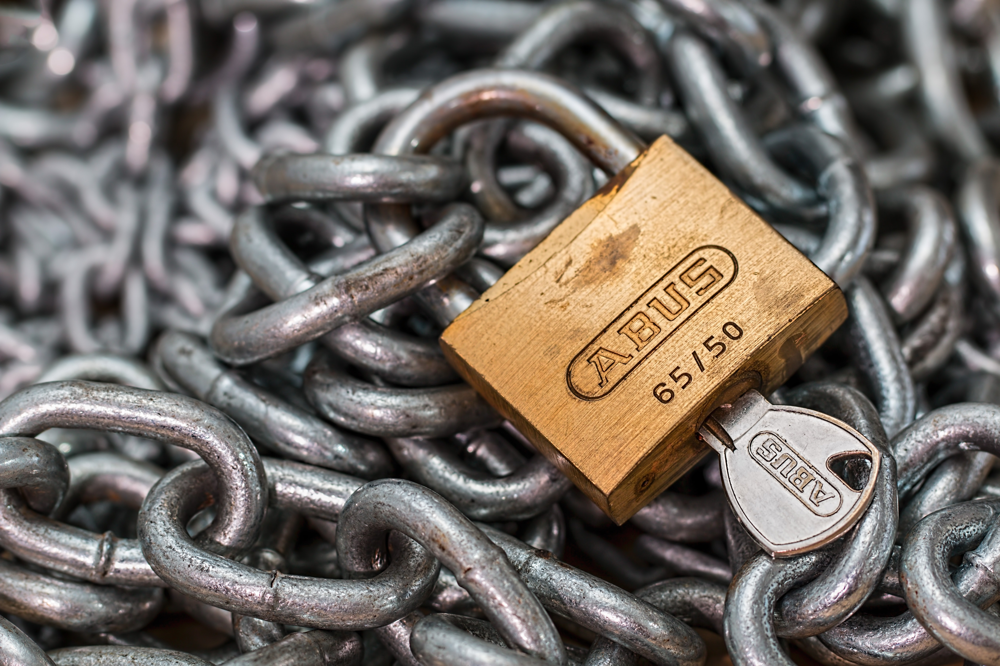
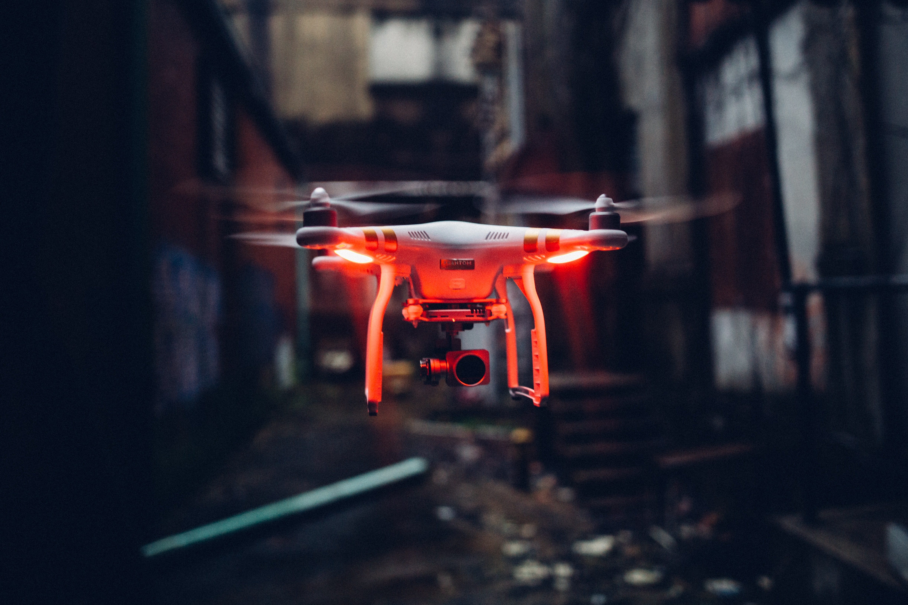

Espionage has always captivated our imagination, and the world of spies is filled with intrigue, secrecy, and cutting-edge technology. While real-life espionage may not always resemble the James Bond movies, the gadgets used by spies are no less fascinating. In this blog, we will explore the top 10 spy gadgets that have played a pivotal role in the world of intelligence and covert operations.
1. Miniature cameras
Tiny cameras hidden in everyday objects like pens, buttons, or eyeglasses have been a staple in espionage for decades. These discreet devices allow spies to capture photos and videos without arousing suspicion.
2. Listening devices
Bugs and listening devices have evolved significantly. Modern versions can be as small as a coin and transmit audio to a receiver, making eavesdropping on conversations a breeze.
3. lockpicks
Spy gadgets aren't limited to electronics. Lock picks and lock bypass tools enable spies to gain unauthorized access to secured areas silently
4. invisible ink
Invisible ink may seem like a relic from the past, but it remains an effective way for spies to send hidden messages. Advanced formulations can only be revealed with specific chemicals or UV light.
5. GPS tracking devices
GPS trackers have become indispensable tools for intelligence agencies. These small devices allow spies to monitor the movements of vehicles or individuals in real-time.
6. Cryptographic Machines
During World War II, the Enigma machine was used by the Germans to encrypt their communications. Today, cryptographic machines have evolved into sophisticated computer algorithms that secure sensitive information.
7. Night Vision goggles

Night vision technology has made its way from the battlefield to the world of spies. It allows operatives to see in complete darkness, giving them a significant advantage during covert missions.
8. Disguise Kits
From wigs and fake mustaches to latex masks, disguise kits help spies blend into their surroundings. Some even come with voice-changing technology to complete the transformation.
9. Spy Drones
Miniature drones equipped with cameras and sensors are invaluable for surveillance. They can access hard-to-reach areas and provide crucial intelligence from above.
10. Pistol Pen
A classic gadget reminiscent of the Cold War era, the pistol pen looks like an ordinary writing instrument but conceals a small firearm. While it may not be standard issue anymore, it's an iconic piece of spy history.